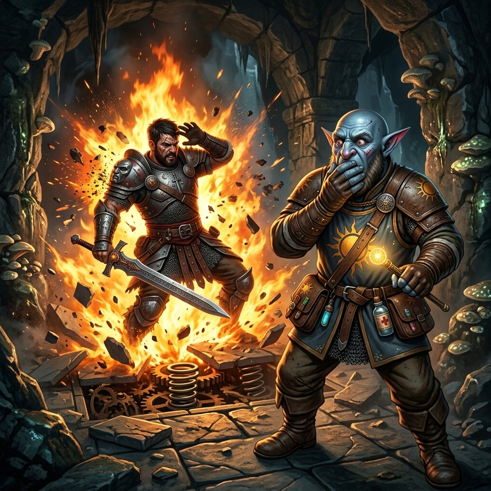
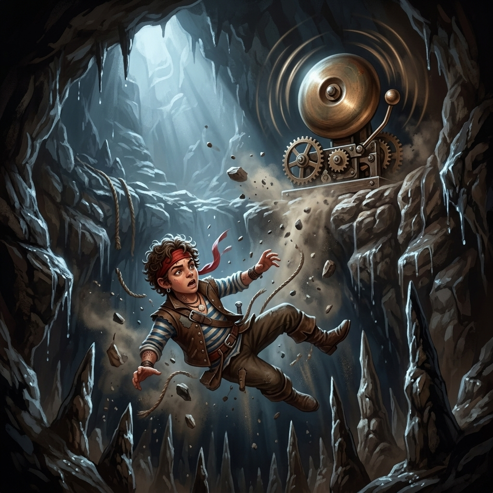
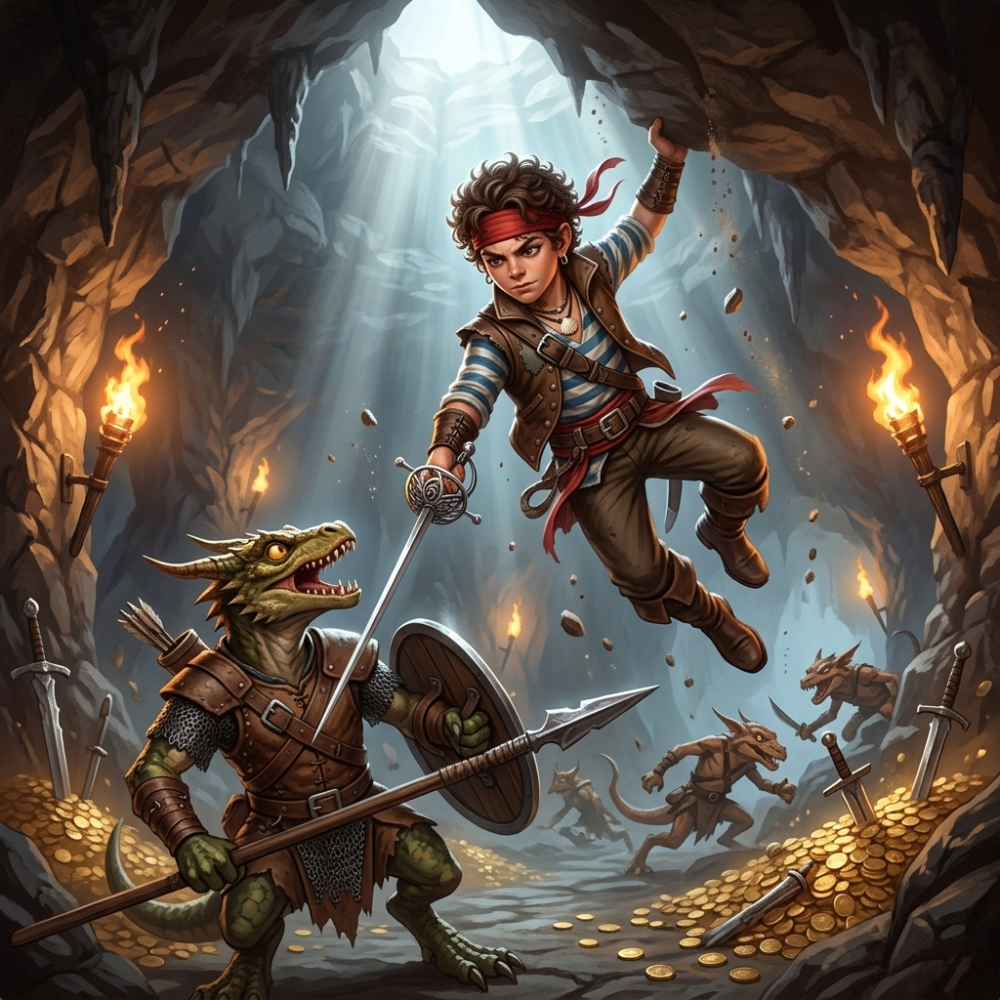
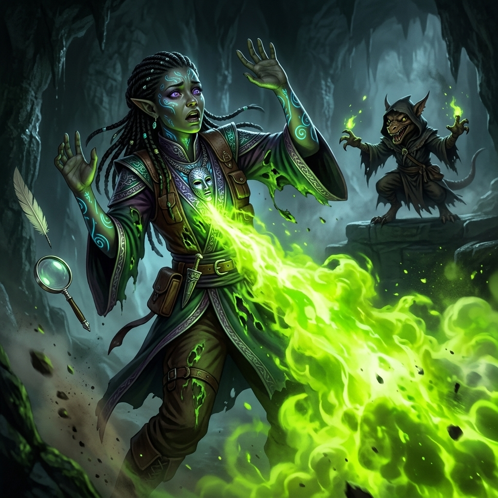
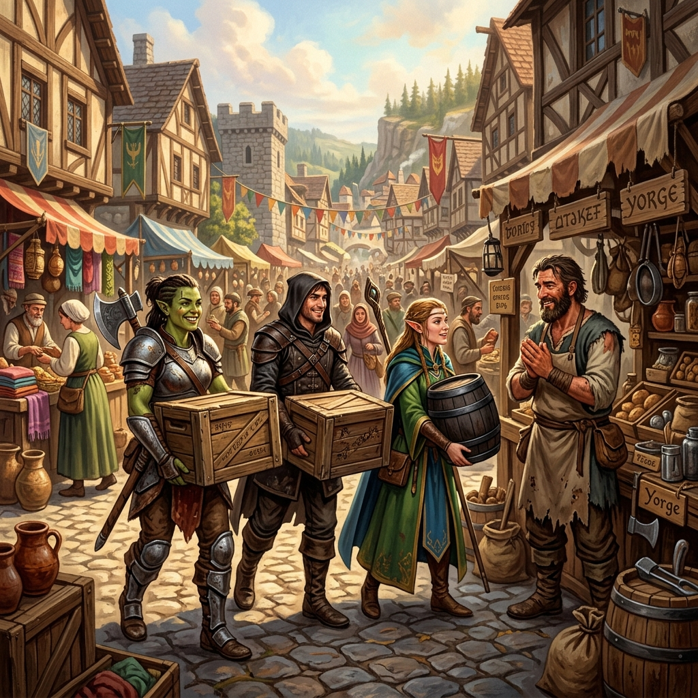
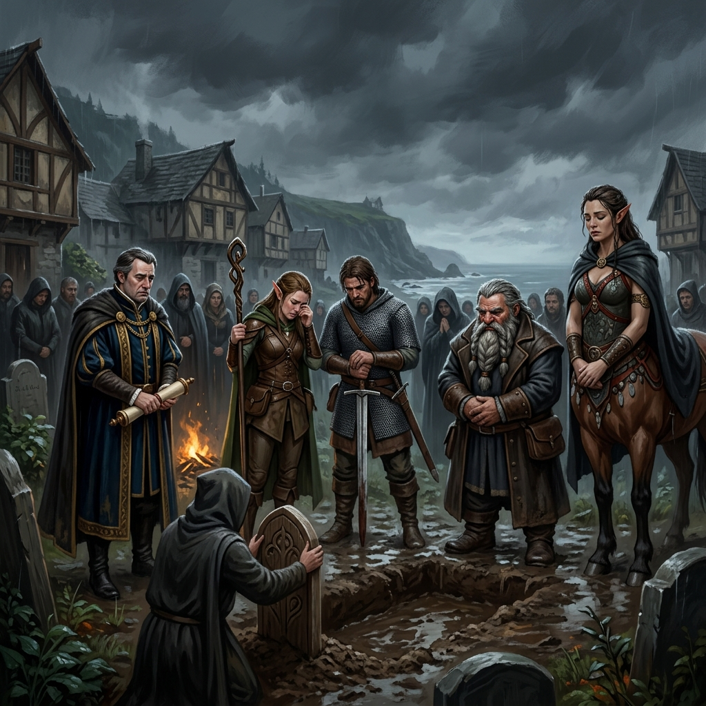

Les Chroniques de Castries ⚔


Chronique de la Session : Le Repaire de Krazekvak
La Descente aux Enfers et le Couloir de la Mort
La traque des voleurs a mené le Quatuor d'Absalom jusqu'à l'entrée d'une sombre caverne creusée dans la falaise. Ignorant l'ingéniosité mortelle de la tribu kobold, les aventuriers se sont enfoncés dans le tunnel principal. La progression fut un véritable cauchemar : le couloir d'accès était conçu pour décimer les intrus.
Le groupe déclencha d'abord un piège d'éboulement camouflé au plafond. Une violente chute de galets et de roches acérées s'abattit sur eux, blessant grièvement trois des membres de l'équipe d'entrée de jeu.

Malgré leurs blessures, ils avancèrent. En tentant de désamorcer un deuxième mécanisme bien plus complexe (une redoutable projection de feu grégeois), Maxime Hus tira le mauvais fil. Le piège cracha des flammes alchimiques ardentes. Go Block fut frappé de plein fouet, s'embrasant violemment. La douleur fut telle qu'il s'effondra au sol, inconscient et aux portes de la mort. Ce n'est que grâce à l'intervention héroïque et aux premiers soins prodigués en urgence par Pipo Petitpas que Go Block put être stabilisé.

Refusant d'abandonner leur mission d'escorte, l'équipe poursuivit prudemment. Mais la malchance continuait de les poursuivre : l'un d'eux marcha sur une fausse plaque et chuta lourdement dans le troisième piège, une fosse cachée tapissée de stalagmites. En tombant, le mécanisme activa un réseau de clochettes d'alarme bruyantes qui résonnèrent dans toute la caverne, alertant la salle des défenseurs.
La Trahison et l'Embuscade
Les gardes kobolds, armés et sur le pied de guerre, accoururent. Pris au dépourvu mais faisant preuve d'une diplomatie exceptionnelle, Celeste et Maxime Hus entamèrent des pourparlers désespérés. Ils découvrirent que les kobolds vivaient dans la terreur de leur nouveau chef, Krazekvak, un tyran magicien qui avait pris le pouvoir par la force. Les aventuriers réussirent l'impensable : convaincre les gardes de s'allier à eux pour renverser le despote !

Un plan audacieux fut élaboré. Les gardes kobolds simulèrent une capture et attirèrent Krazekvak (accompagné de sa garde rapprochée) dans la pièce où le Quatuor se tenait en embuscade. Pipo Petitpas, agile comme un chat, s'était hissé au plafond, attendant le moment parfait. Lorsque le chef franchit le seuil, Pipo bondit ! Il rata malheureusement sa cible principale, mais retomba lourdement sur le second garde kobold, qu'il acheva prestement d'un coup de rapière fatal.
Le Tyran Acide et la Tragédie
La trahison révélée, Krazekvak hurla de rage. Le combat qui suivit fut d'une férocité sans nom. Krazekvak n'était pas un simple kobold : c'était un mage impitoyable maîtrisant l'art des arcanes caustiques. Il invoqua de sombres lianes gênantes pour immobiliser Pipo, tout en crachant des insultes en draconique.

Celeste, sachant que le temps jouait contre eux, prit tous les risques. Elle s'exposa pour lancer l'une de ses meilleures bombes alchimiques en plein sur le mage. Krazekvak, touché, riposta en déchaînant une monumentale Explosion d'acide. Une vague verte incandescente balaya la pièce. Celeste la reçut de plein fouet. Son armure fut rongée en un instant et l'Elfe s'effondra sur le sol de pierre, son dernier souffle emporté par les vapeurs toxiques. Celeste n'était plus.
Ivres de rage et de chagrin, Maxime Hus, Go Block et Pipo Petitpas, soutenus par les rebelles kobolds, redoublèrent de violence et finirent par éventrer le tyran Krazekvak. Le repaire était libéré de son emprise, mais le prix payé était immense.
Retour à Otari et Funérailles
Conformément à leur marché, les survivants laissèrent le repaire aux kobolds désormais libres et récupérèrent la précieuse malle volée. Le voyage de retour vers Otari fut lourd et silencieux. Sur un brancard de fortune reposait la dépouille de leur amie.

De retour à la civilisation, dans l'effervescence du marché d'Otari, ils remirent enfin les biens volés au marchand varisien Yorge, visiblement soulagé de sauver son commerce. Ils passèrent également par l'agence des Transports Gallentine pour confirmer la réussite de leur contrat et percevoir la solde de l'escorte.

La session s'acheva sur une note poignante. Une cérémonie solennelle fut organisée sous le ciel couvert d'Otari pour inhumer Celeste. Autour de la tombe se pressaient ses trois compagnons meurtris, le marchand Yorge, la coursière centaure Narala avec qui le voyage avait commencé, ainsi que Mme Oloria Gallentine, honorant le courage de l'enquêteuse elfe qui donna sa vie pour protéger la route.